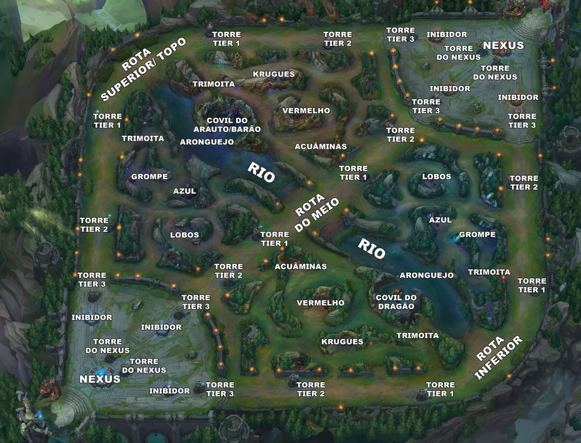

League of Resilia, um jogo de estratégia em EQUIPE, onde iremos descobrir como voce se comporta com seus aliados via (QUIZ), o jogo é baseado em uma composição de 5x5, onde ambos os 10 jogadores entram em um mapa. Onde ambos irão competir por objetivos, tais como: Dragões(vários tipos), BARÃO entre outros. Composto por mais de 100 campeões com várias classes:assassino,lutador,tanque,atirador e suporte. As 5 posições são: Top laner: Geralmente usam campões tanque para front-lane(tancar na batalha) Jungler: é o caçador, onde pode se usar qualquer classe de campeão que fica na selva matando os bichos e gankar(ajudar) as lanes e também faz os objetivos com a ajuda do time. Mid laner: É a lane do meio do mapa, onde geralmente usam mago e assassinos. Atirador: É onde o atirador que atira de longe, sendo o dano de um adcarry Suporte: É oque da suporte para o atirador e também para o time todo. E a seguir iremos ter algumas perguntas referente a isso e também a habilidade do campeão(ã) as perguntas a seguir abrange o jogo como um todo, mas focando em trabalho em equipe.
Iniciar Partida